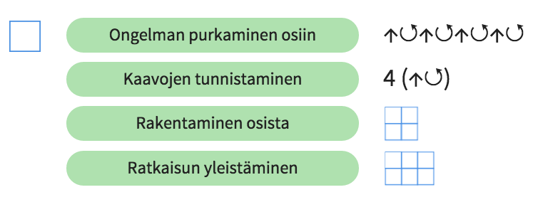
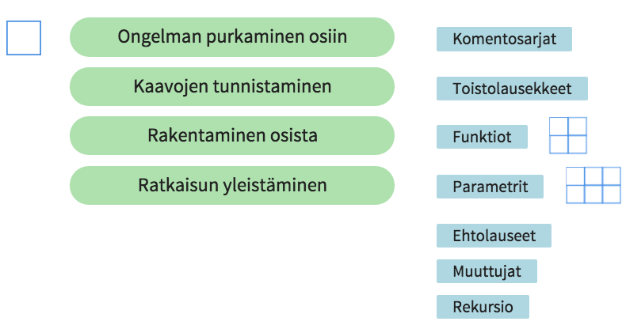

Kaksi lähiopetuspäivää:
Käytännön harjoittelu:
Oma koodikoulun ohjauskokeilu ja sen raportointi = verkkotyöskentelyjakso:
Päämäärät:
Miten saat itsesi tonkimaan ohjelmointia hieman enemmän?
Kerrataan perusteet: http://www.koodikirja.fi/luku1/ Turtle Roy: http://turtle-roy.herokuapp.com
Peruskomennot
Piirtäminen
fd 50rt 90lt 45clearhomePiirtäminen
penuppendownVärit ja teksti
color "red"bg "green"text "Moikka maailma!"font 10Tallentaminen ja lataaminen
login "nimi"save "nimi"open "nimi"lsÄänet
say "Hello world"play c 500Näppäimistötaikoja
alt gr -näppäimellä ja 8- tai 9-näppäimillä.alt ja 8 tai 9alt gr -näppäimellä ja 7- tai 0-näppäimilläshift, alt ja 8 tai 9.Sekvenssit
s [clear, fd 90, rt 90, fd 90, rt 90, fd 90, rt 90, fd 90, rt 90]Toistot
r 4 (fd 50)Funktiot (nimettyjä käskyjä)
let nelio = r 4 (s [fd 50, rt 90])nelioVaihtoehtoisesti myös
let kulma = s [fd 50, rt 90]let nelio = r 4 kulmaneliohttps://github.com/raimohanska/turtle-roy laajempaa käskylistausta ja alkuperäinen lähdekoodi.
http://turtle-js.herokuapp.com/ Javascript-versio, kts. https://github.com/raimohanska/turtle-js
Lähde ja hyvää lukemistoa: http://koodi2016.fi/opetus.html
Koodauksen opetus on ajattelun opettamista! (ohjelmoinnillinen ajattelu)
Ohjelmointia oppii tekemällä!


Miten järjestää koodikoulutunti oman oppilasryhmän kanssa? http://koodikoulu.github.io/koodikoulu/
Tarkastuslista
Mitä ongelmia ohjelmoinnin opettamisessa voi tulla eteen? Miten haasteet ratkaistaan? Mistä löytyy tuki opettajalle?
Mistä löytyy tuki opettajalle?
Ylimääräistä kivaa:
Materiaali 9 - 12 -vuotiaille alakoululaisille
http://rosa.utu.fi/juniorkoodari/etusivu/materiaalit/
Hyödyntää Turtle Royta, kuten Koodikirja.
Pääpointit tehtävissä
Verkkotyöskentelyjakso alkaa toisen lähiopetusiltapäivän jälkeen. Ympäristönä ReadIT. Ideana pitää yksi tai useampi oppitunti oppilaille koodikoulun mukaisesti, ja dokumentoida se.
Tutorina toimii:
Heikki Hutri hohutr@utu.fi
http://rosa.utu.fi/koodikoulut/
Hankkeeseen kuuluu muitakin koulutuksia, joita ei tälle kurssille vaadita. Saat ne näkyviin "TTtiedonhaku" ja "TTtietoturva" -avaimilla (voit tutustua näihin ja suorittaa nekin halutessasi, niistä saat 2 op tietotaidot -kurssitodistuksen, tarkemmat infot kurssista: http://rosa.utu.fi/kick/tietotaidot/)
kalle@geniem.com
artturi@geniem.com
marko@geniem.com
Kysymyksiä?
Kommentteja?
Haasteita tai ideoita?